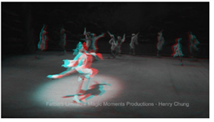
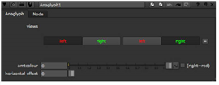
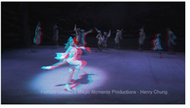
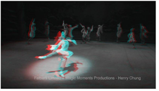

您可以使用浮雕节点将输入转换为浮雕图像，当使用双色浮雕眼镜观看时，会产生 3D 效果。
| 1。 | 选择 视图 > 立体声 > 浮雕 将浮雕节点插入到脚本中的适当位置。 |
| 2. | 使用 视图 “浮雕属性” 面板中的控件，以选择要用于左右眼的视图。 |
核武器 将输入图像转换为灰度浮雕图像。左侧输入被过滤以删除蓝色和绿色，右侧视图以删除红色。

| 3. | 要向图像中添加颜色，请向右拖动 Amtcolor 滑块，或将 0 (灰度) 和 1 (彩色) 之间的值插入到 Amtcolor 输入字段。 |

如果图像包括非常红色、绿色或蓝色的区域，在其中添加更多颜色可能不会产生最佳效果。

| 4. | 要反转颜色并使用右侧输入的红色通道和左侧的蓝色和绿色通道，请选中 (右 = 红色) 盒子。 |

| 5. | 要控制使用浮雕眼镜观看时图像相对于屏幕的显示位置，请在 水平偏移 输入字段。要让图像出现在屏幕前面，通常会输入负值。要让图像显示得更远，您通常会输入一个正值。(如果您交换了左右视图，则情况并非如此。) |
提示:
如果您愿意，您可以将 Anaglyph 节点注册为查看器进程。这样，您总是将它作为查看器的查看器进程下拉菜单中的查看选项，并且可以将它应用于当前查看器，而不必在节点图中插入节点。执行以下操作:
1。创建一个名为
Menu.py
在你的插件路径目录中，如果一个已经不存在。有关插件路径目录的更多信息，请参见
加载 Gizmos 、 NDK 插件以及 Python 和 Tcl 脚本
.
2。要将浮雕节点注册为查看器进程，请在您的
Menu.py
:
Nuke.ViewerProcess.register (“浮雕”，nuke.createNode，(“浮雕”，“”))
3.重启
核武器
.
4。要应用浮雕查看器进程，请从查看器控件的查看器进程下拉菜单中选择它。
5。要调整浮雕查看器进程控件，请选择
显示面板
从查看器进程下拉菜单中。
有关查看器进程的更多信息，请参见
使用查看器控件
.
|
|